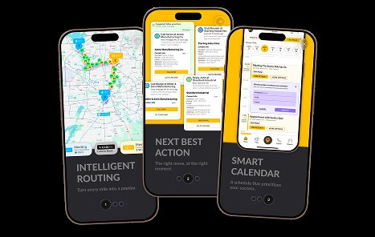
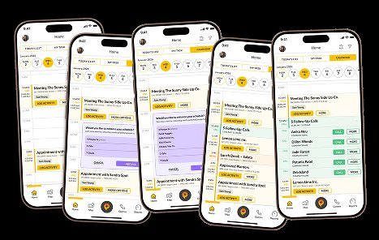
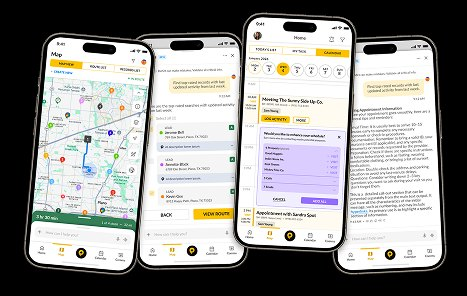
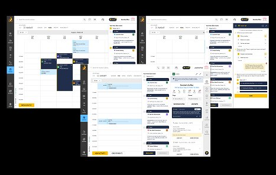

Recruited to build the design function and lead AI experience strategy for a platform used by thousands of field-sales teams, so reps spend less time on admin and more time closing.
SPOTIO serves field-sales teams in medical devices, distribution, and construction: reps who live on the road, not at a desk. Design operated as a production function on a legacy platform with years of accumulated usability debt, no research practice, and AI features planned without an experience framework.
My mandate was to build design as a strategic function and define how AI would show up in the product: the difference between noise and a co-pilot reps actually trust.

AI as a co-pilot, not a crutch. I designed onboarding and customer communication so AI guided reps through the process and strengthened the natural flow of their work, rather than taking over or adding one more thing to manage.

I introduced calendar suggestions that surface in the gaps. When a rep had a spare minute, the calendar offered a quick, relevant action to take right then, turning dead time into progress without pulling them out of their day.

Before committing engineering time to new features, I ran a hands-on testing process with small batches of real end users: change the product, test again, loop after loop, until we reached the right solution. We earned confidence before we spent the build.

Back-office managers have to keep themselves and their teams taking the right action at the right moment, and too many signals leads to decision paralysis. I built a system that weighs the relevant factors and surfaces clear suggestions, so the information needed to make a fast, confident call is right at their fingertips.
Short walkthroughs of the AI experience: the framework, the DASH co-pilot, and the legacy redesign in the product.